之前，我们已经安装了所有Windows Embedded Compact 7所必须的开发环境，这个教程将会包含配置WEC7项目、定制镜像、生成不同版本镜像、设置和汉化中文、虚拟机镜像体验等等，我们来看看吧！
|
索引
一、 准备
二、 创建项目（Virtual PC专用）
三、 设置简体中文并编译
1） 设置简体中文
2） 编译
四、 测试运行
1） 定制虚拟磁盘（VHD）
2） 修改启动配置
五、 添加驱动、功能
1） 备份
2） 添加驱动
3） 添加功能
4） 编译新镜像
5） 更新虚拟磁盘内的镜像
6） 启动运行新镜像
7） 体验
六、 构建并体验Silverlight版镜像（Virtual PC专用）
1） 重启Visual Studio并创建新项目
2） 定制
3） 配置分辨率并运行
4） 体验
七、 不同主题的Silverlight界面预览
1） 主屏幕
2） 设置界面
八、 制作通用镜像（兼容大部分虚拟机软件，如VMware）
1） 重启Visual Studio并创建新项目
2） 定制
3） 编译镜像
4） 制作通用启动镜像
5） 启动通用镜像
九、 打包镜像
1） 打包Virtual PC虚拟机专用WINCE 7启动虚拟磁盘（VHD）
2） 打包 通用虚拟机 专用WINCE 7启动光盘（ISO）
十、 总结
|
1. 所有WEC7的环境安装后，你会发现桌面上并没有快捷方式，我们需要在开始菜单中打开
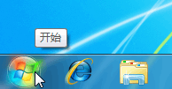
2. 找到“Microsoft Visual Studio 2008”，然后单击
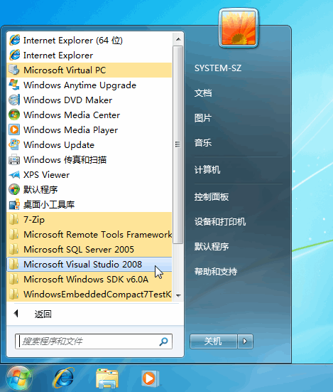
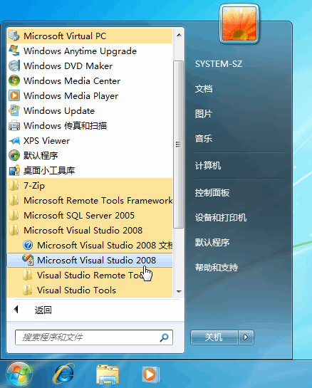
3. 然后就会出现以下界面：
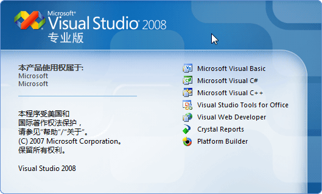
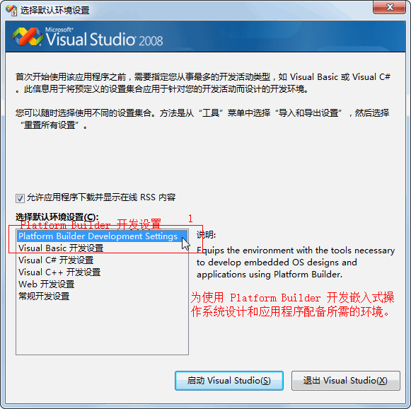
4. 这是VS2008的初始布局配置界面，注意：这里必须要选择“Platform Builder Development Settings”，因为选择这个选项后，才会加载 Platform Builder（平台构建器） 的专属的布局。否则后期需要重新调整。
然后点击“启动 Visual Studio(S)”
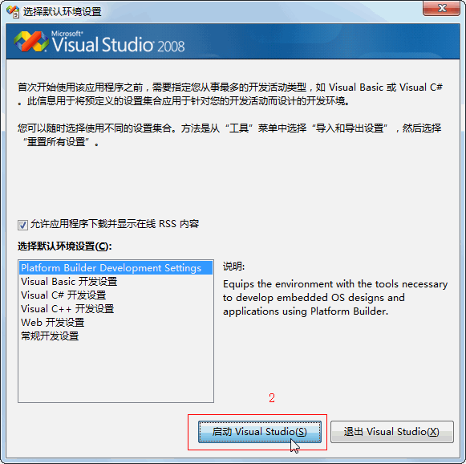
5. 提示需要几分钟的时间
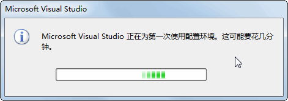
6. 当出现了这个窗口，直接选择“No, I would not like to participate. (不，我不愿意参与)。”，然后点击“OK”
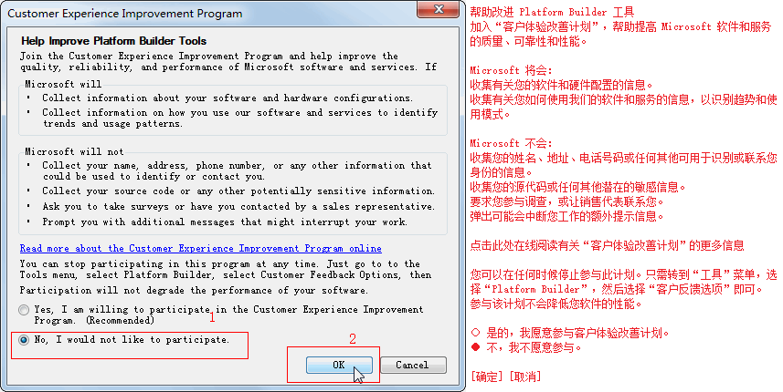
7. 然后就会来到这个窗口,准备的部分已经完成了
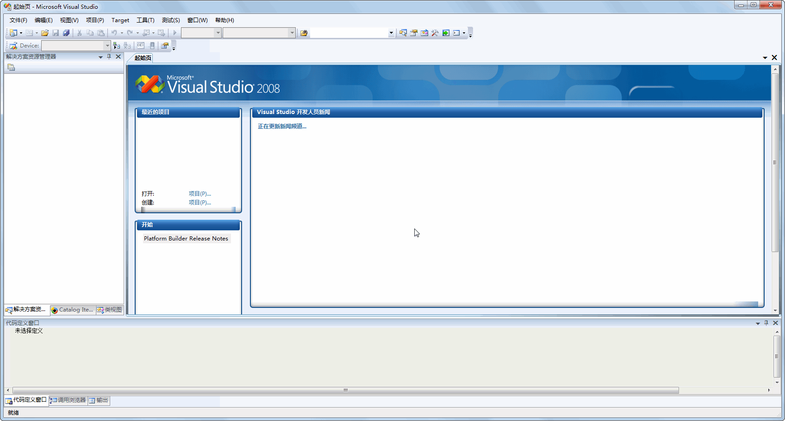
1. 在菜单栏中，逐步点击：文件 > 新建 >项目
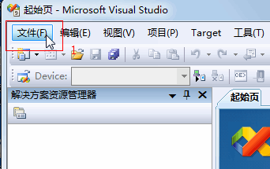
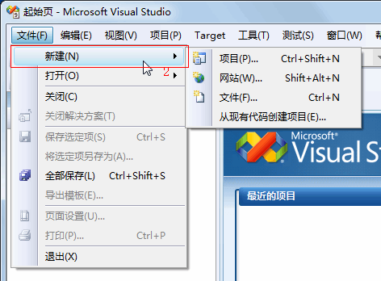
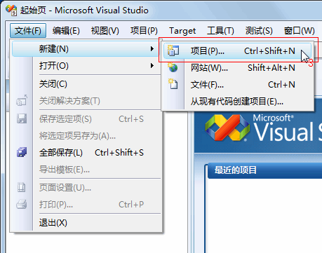
2. 弹出“新建项目”窗口，“项目类型”列表中点击“Platform Builder”选项，“模板”中选择“OS Design”
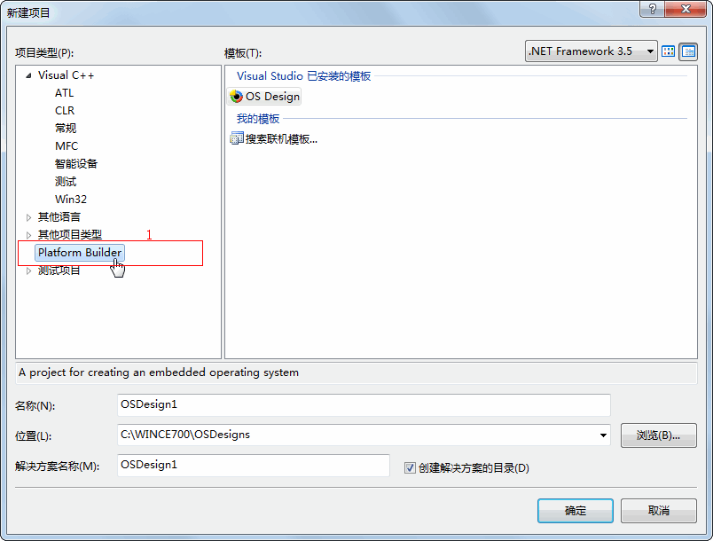
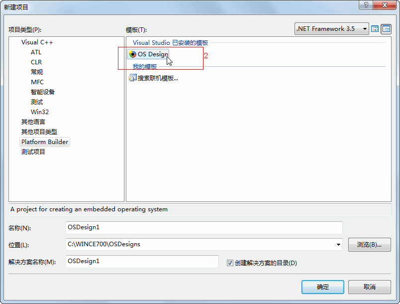
下方的配置可以自定义，我这里保持默认
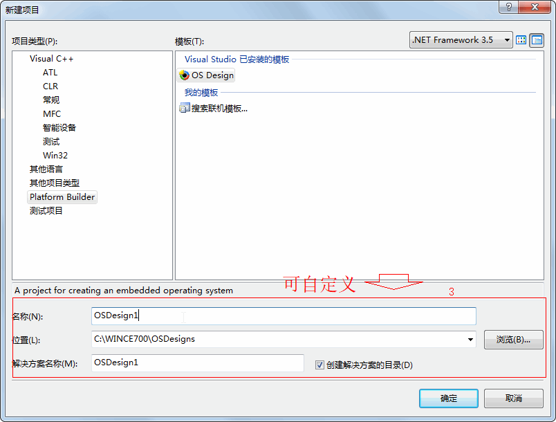
然后点击“确定”继续
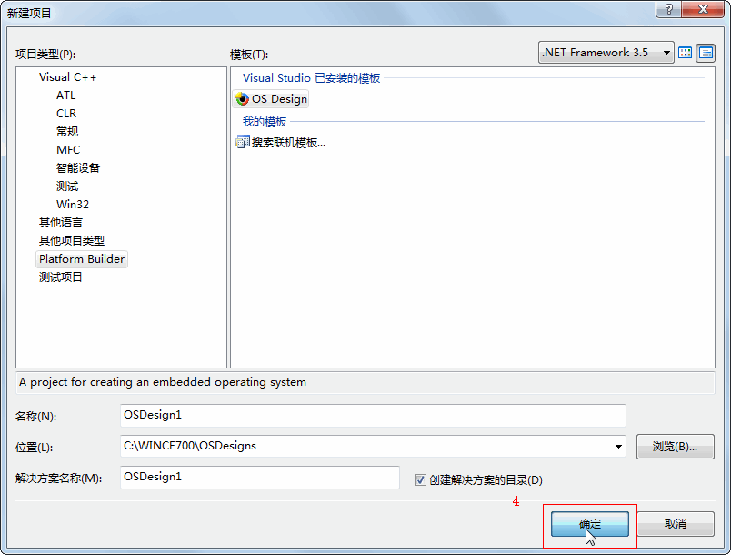
3. 弹出了“Create an OS Design”，点击下一步
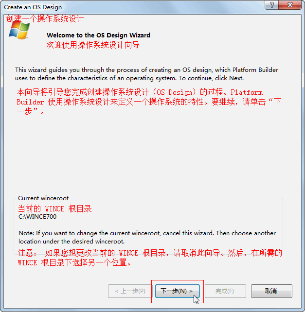
4. 出现“板级支持包 (BSP)”的选择界面，由于我们的主要目的是要运行在虚拟机（我们刚才安装的Virtual PC）中，所以直接只勾选一个：“Virtual PC : x86”选项，也就是说这个镜像是专为Virtual PC适配的，包含驱动支持，但是在其他虚拟机上（如VMware）这个镜像可能是不会被兼容的（可能不能正常运行）
然后直接点击“下一步”
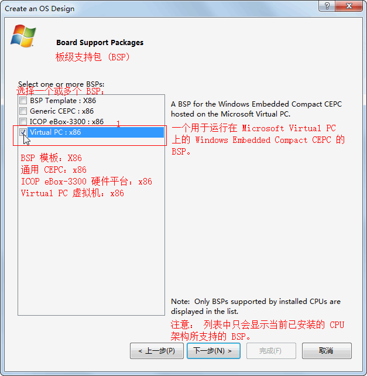
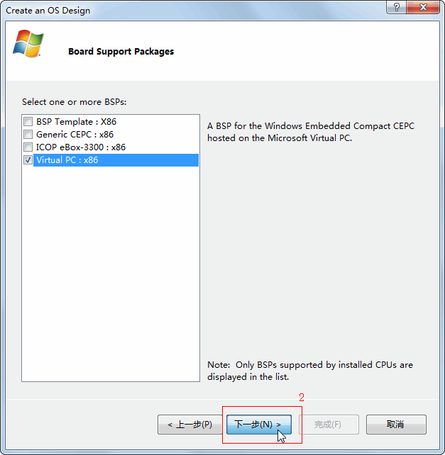
5. 点击下一步后提示选择“设计模板”，把“Enterprise Device”展开，直接选 (5) 的那个选项:“Handheld”，因为这是最适合Virtual PC虚拟机的模板（这只是个起点模板，并不代表最终功能），然后点下一步。
这是对应的窗口中“具体说明”区域的一些翻译（对应序号(1)-(10)）：
(1) Consumer Media Device：提供用于能够播放家庭娱乐中心数字音频或视频内容的设备的起始点，例如用于存储音乐并在家庭立体声系统上播放音乐的 Windows Media Services 服务器。
(2) Portable Media Player：一种用于播放或存储音乐、视频及其他电子媒体的设备。
(3) Custom Device：提供一个默认不选择任何目录项（Catalog items）的操作系统设计的起始点。可能的设备范围从无显示屏的简单网络设备，到拥有图形显示、支持互联网浏览和丰富多媒体播放功能的全功能设备。（这是最有弹性的选项）
(4) Enterprise Device：为各种设备提供起始点，包括可便携连接的手持设备、工业自动化设备，以及使用远程桌面协议（RDP）的终端服务客户端（Terminal Services Client）设备。
(5) Handheld：一种便携式互联网设备，配备 640x480 或更高分辨率的显示屏，并使用基于鼠标的用户界面（UI）或基于触控笔（手写笔）的触摸屏 UI。
(6) Industrial Controller：一种工业自动化设备，例如人机界面（HMI）面板或可编程逻辑控制器（PLC）。
(7) Thin Client：一种远程桌面终端计算机，包含支持远程桌面设备所需的功能，其中包括资源受限的外壳（shell）和远程桌面协议（RDP）。
(8) Network Projector：一种显示设备，例如会议室投影仪，它通过任何 IP 网络使用远程桌面协议（RDP），将 Windows Vista 或 Windows 7 PC 的桌面显示到大型屏幕上。
(9) Small Footprint Device：为最小的、具备基础功能的 Windows Embedded Compact 运行时镜像提供起始点。
(10) Embedded Device with Silverlight XAML：为拥有基于 Windows Embedded 版 Silverlight 用户界面（UI）的设备提供起始点。
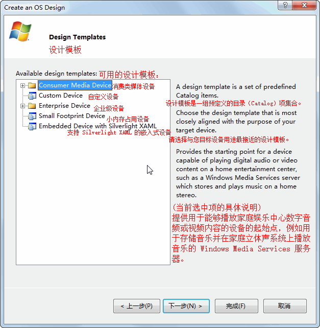
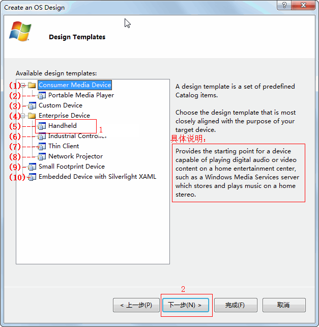
6. 保持默认，点击下一步
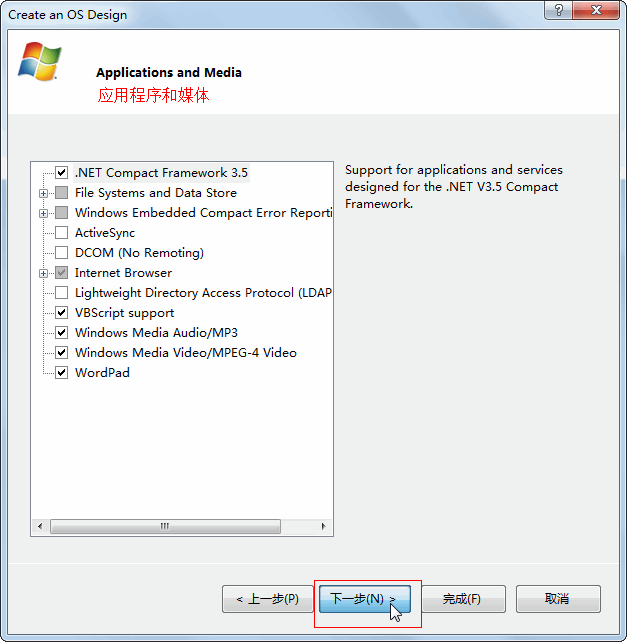
7. 展开“局域网 (LAN)”的那个选项，勾选“有线局域网”，然后点击下一步
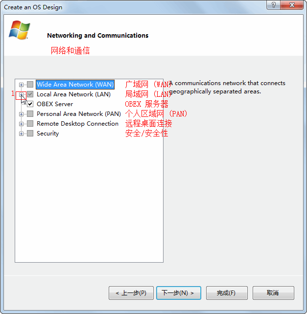
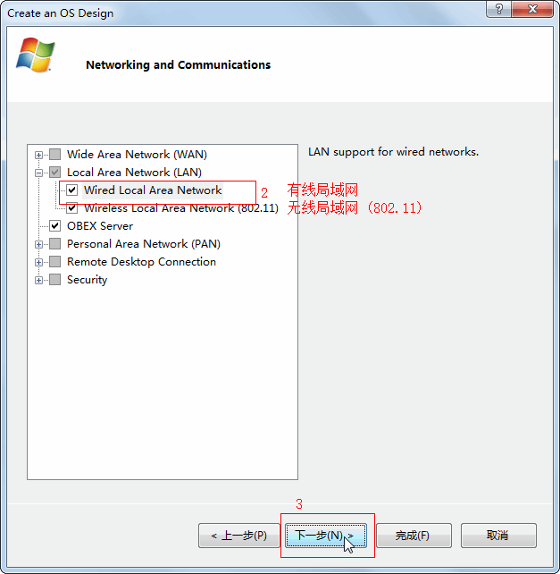
8. 注意：这里不要勾选任何选项，直接点击“完成”
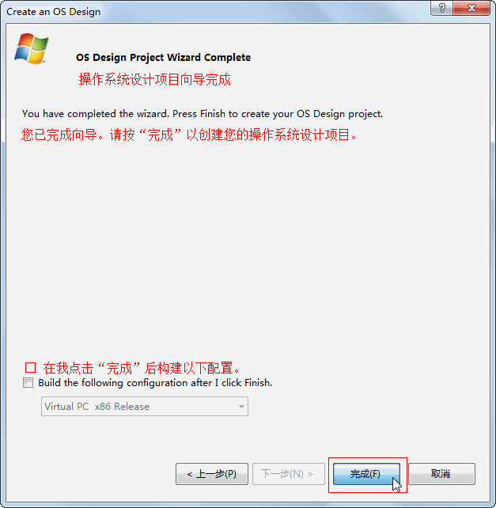
9. 稍等一会儿，就会出现“目录项安全警告”的窗口，这个不用管，直接点击 Acknowledge 即可
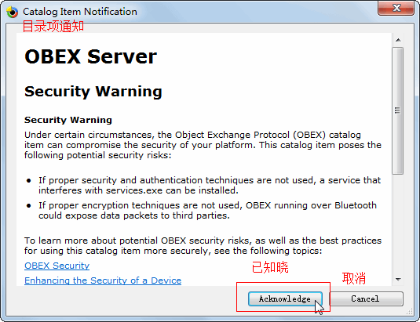
10. 然后就回到了VS的界面，这个时候注意保存
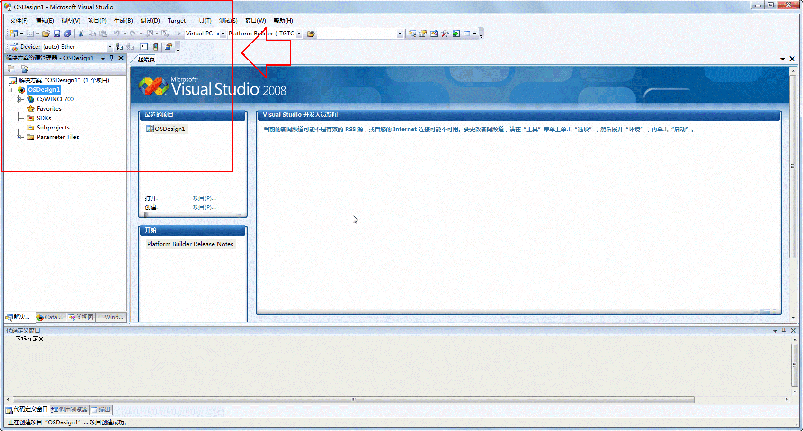
在菜单栏中，逐步点击 文件 > 全部保存
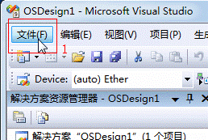
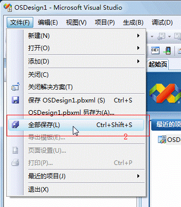
1. 回到这个 VS界面，在菜单栏中逐步点击 项目 > 属性
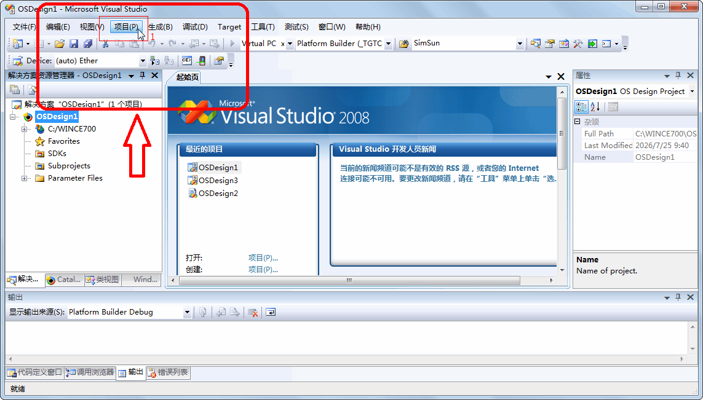
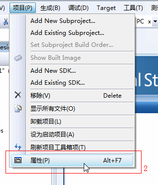
2. 在属性页中展开“配置属性”，点击“Locale（区域设置/本地化）”，然后将前面三个均设为 简体中文（0804），注意第4个选择“Chinese (Simplified) - (zh-Hans) —— 中文(简体) - (zh-Hans)”，不要选择Chinese (PRC)
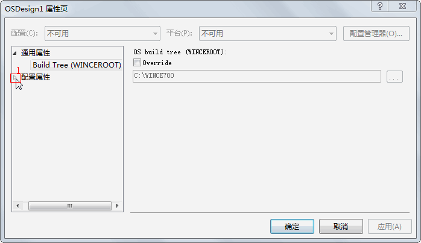
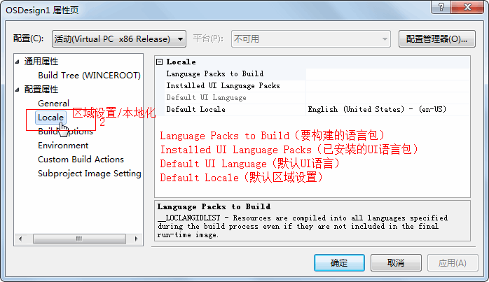
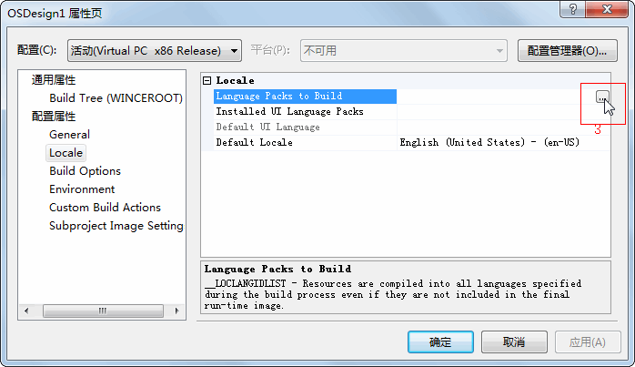
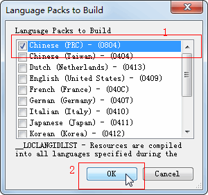
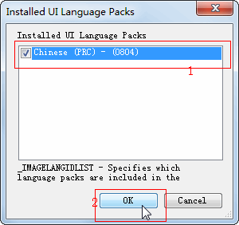
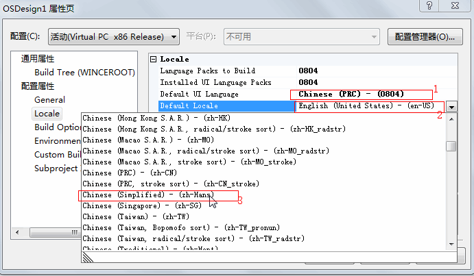
设置完成后，是这个样子，然后点击确定
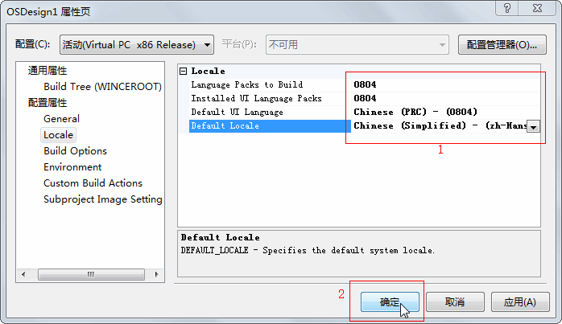
3. 然后回到VS窗口，在左侧会有一个叫“解决方案资源管理器”的工具窗口，我们在里面选择第二个标签
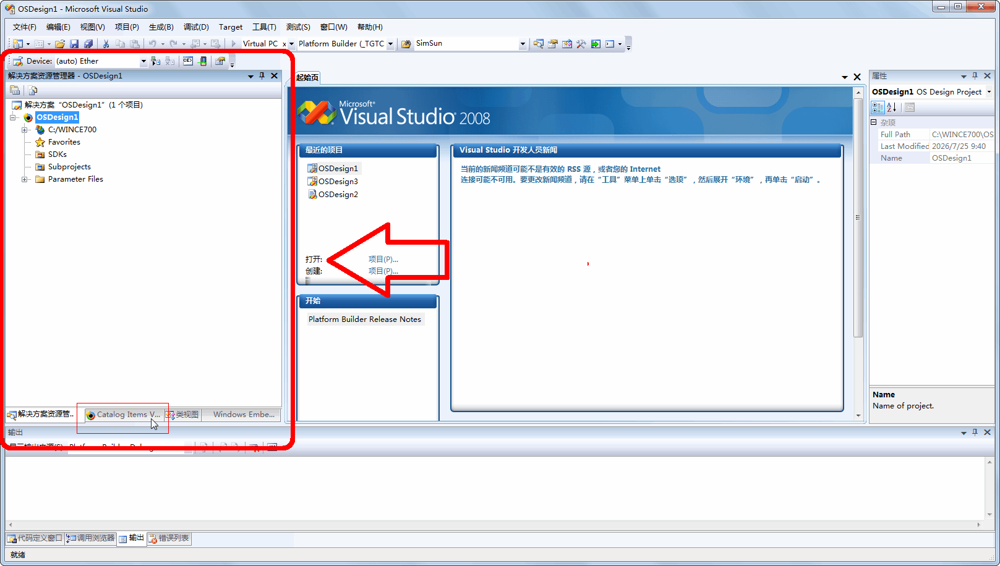
4. 然后回到VS窗口，在左侧会有一个叫“解决方案资源管理器”的工具窗口，我们在里面选择第二个标签，工具窗口就变成了“Catalog Items View（目录项视图）”
我们逐步展开 ·Core OS > ·Windows Embedded Compact > ·Fonts > ·Scripts > ·Chinese (Simplified),
然后勾选2个选项：“Microsoft YaHei（微软雅黑）”、“SimSun & NSimSun（宋体与新宋体）”
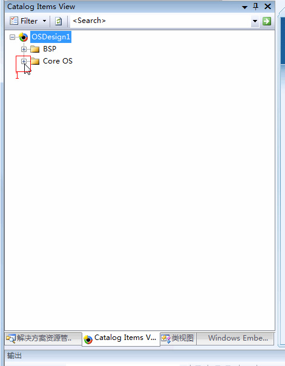
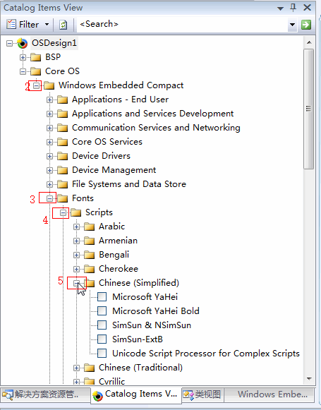
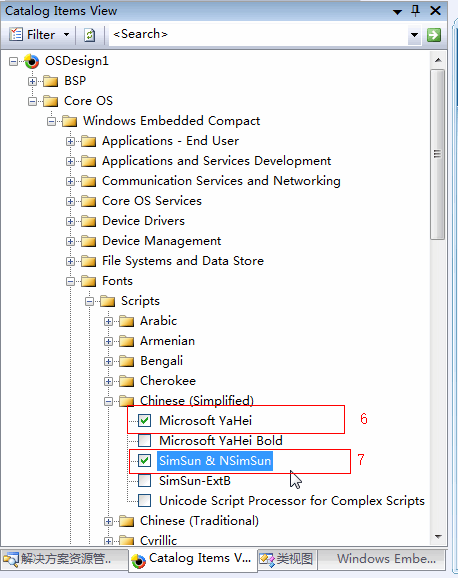
5. 收回“Fonts”目录，然后逐步展开 ·International > ·Code Page ，勾选“GB18030 Data Converter（GB18030 数据转换器）”
a) 逐步展开 ·Language > ·Chinese (Simplified)，勾选“East Asian Edit Control（东亚编辑控件）”和“ East Asian Word Wrap（东亚文字换行）”
b) 展开·Input Method Editor（输入法编辑器）> ·MSPY 3.0 for Windows Embedded Compact（微软拼音输入法 3.0），勾选“MSPY 3.0 for Windows Embedded Compact（微软拼音输入法 3.0）”、两个选项“Double Spelling (Shuang Pin) soft keyboard（双拼软键盘）”
c) 展开“MSPY 3.0 for Windows Embedded Compact”目录，选择1.7 MB - Standard Database（标准词库）
d) 展开并勾选“Pocket IME”，勾选“Double Spelling (Shuang Pin) soft keyboard（双拼软键盘）”
e) 展开“Locale”目录，勾选“Chinese (PRC)”和“Chinese (Simplified)”
其他都不要勾选
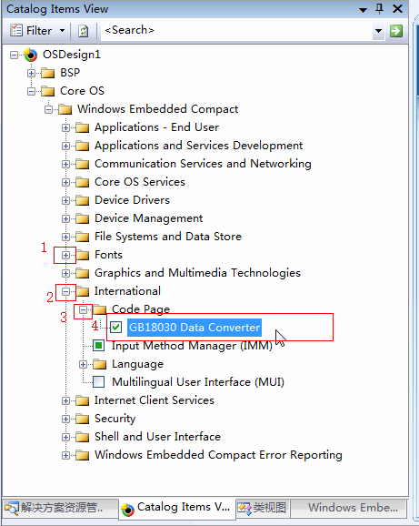
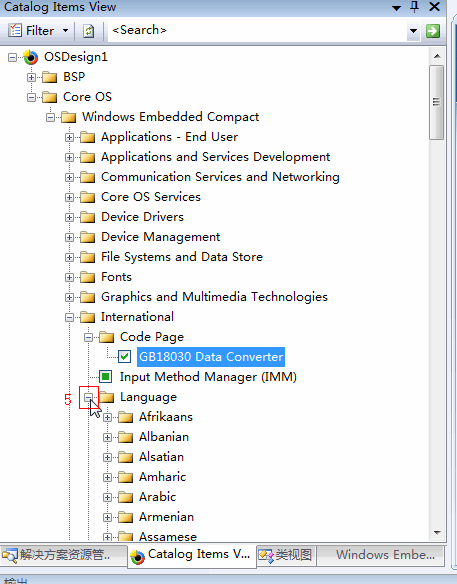
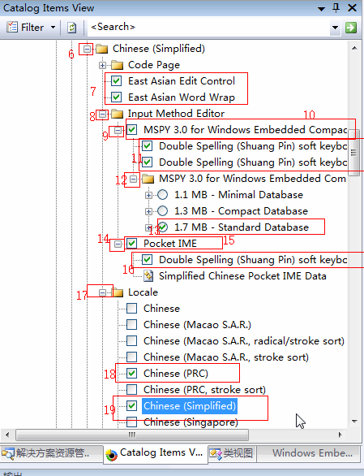
这样就成功的设置了中文
1. 检查无误后，就可以编译了，在菜单栏中，逐步选择 生成 > 生成解决方案，也可以直接按 F7 键
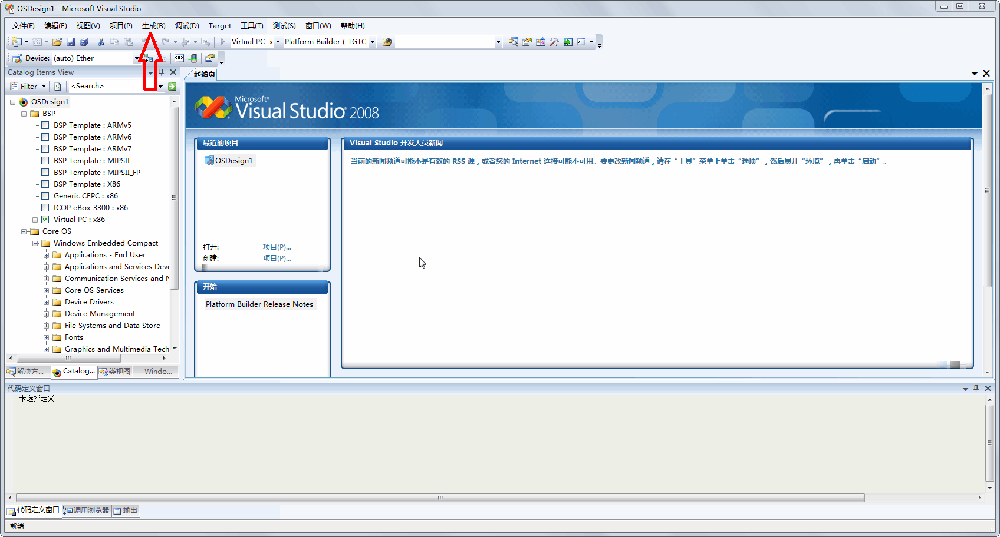
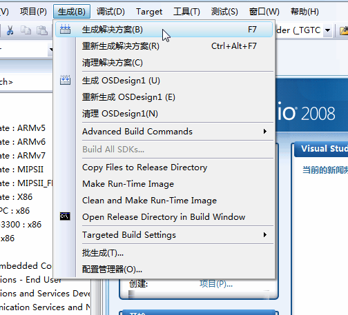
2. 选择就正式开始编译镜像了，可以看到“输出”的工具窗口在不断的滚动，说明正在编译，此过程会花费比较长的时间，希望耐心等待！
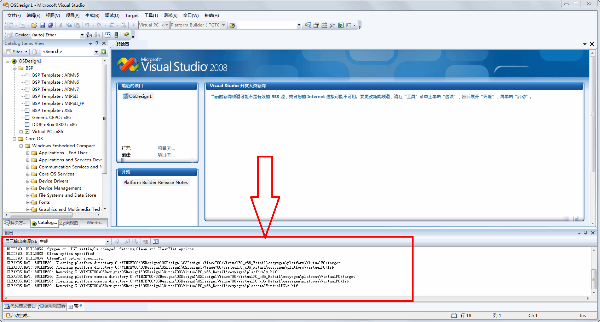
3. 我这里大概编译了 10 分钟就编译完成了，当您发现“输出”工具窗口里出现了“========== 生成: 成功或最新1 个，失败0 个，跳过0 个==========”，说明编译成功完成！
注意：VS窗口先不要关掉，放在旁边备用
编译的镜像就是 你的目录\WINCE700\OSDesigns\OSDesign1\OSDesign1\RelDir\VirtualPC_x86_Release\NK.bin（我的是：C:\WINCE700\OSDesigns\OSDesign1\OSDesign1\RelDir\VirtualPC_x86_Release\NK.bin）
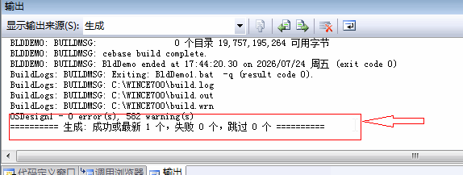
现在，我们已经成功地编译出来了镜像，现在到了测试运行的时间（接下来的路径将按照我的安装路径）
1. 打开 Windows资源管理器 ，导航到 C:\WINCE700\platform\VirtualPC\VM
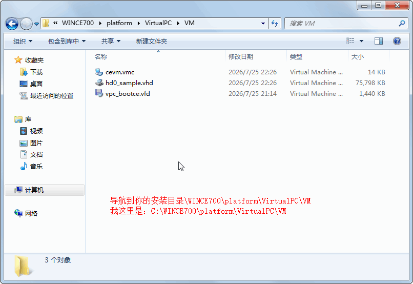
2. 新建一个文件夹，将这三个文件复制到新建文件夹，做备份，然后保存窗口打开，放在旁边备用
3. 然后打开开始菜单，找到“Windows PowerShell”或者“命令提示符”，然后右击以管理员身份运行
4. 就出现了这个蓝色的命令行窗口，这就是“Windows PowerShell”，管理员身份的cmd也可以，我们需要输入 4 行命令
我们输入第1个命令：diskpart
回车
我们输入第2个命令：select vdisk file="C:\WINCE700\platform\VirtualPC\VM\hd0_sample.vhd"
（注意换为你的目录），回车
此时就会有“驱动安装成功”的提示，我们不用管它
我们输入第3个命令：expand vdisk maximum=128
注意：千万不要超过 128 ，否则实测镜像引导不了， 128 为最佳
回车
我们输入第4个命令：detail vdisk
回车
然后请检查“虚拟大小”的数值是否是 “128 MB”
最后，就可以关闭了
5. 现在，右击以管理员身份运行DiskGenius（我已经准备好了在网盘，您可以直接使用）
6. 在菜单栏中逐步选择 磁盘 > 打开虚拟磁盘文件
7. 在浏览窗口，导航到 C:\WINCE700\platform\VirtualPC\VM （替换为你的目录），然后选择 hd0_sample.vhd ，点击打开按钮
8. 然后，点击“空闲”部分的可视化区域，然后点击“新建分区”
分区类型 选择“主磁盘分区”，文件系统 选择“FAT32” ，然后点击“确定”
9. 回到了主界面，点击“保存更改”
均选择“是”
10. 再次回到了主界面，双击“主分区(1)”，打开后会显示空白界面，放在旁边备用
11. 打开 Windows资源管理器 ，导航到 C:\WINCE700\OSDesigns\OSDesign1\OSDesign1\RelDir\VirtualPC_x86_Release（换为你的目录）
在搜索栏中搜索“NK.bin”，然后选定文件，CTRL + C复制，回到刚才DiskGenius的空白目录的界面，点一下，然后CTRL + V粘贴，（或者直接拖动）
然后会提示这个弹窗，直接点“是”
点击“确定”，然后点击“完成”
然后就可以看到成功的复制了
12. 然后关闭虚拟磁盘文件
1. 回到刚才打开的 Windows资源管理器窗口（C:\WINCE700\platform\VirtualPC\VM）
找到“cevm.vmc”（ Virtual PC虚拟机配置文件），双击打开它
就会发现自动打开了 Virtual PC ，并自动启动了虚拟机“cevm”，记住这个名字后面要用
2. 到这个界面的时候，我们立刻按下空格，进入“配置菜单”，我们要修改一些设置
就会出现以下界面，现在就是配置菜单的界面了
我们按下键盘上的“2”，修改启动设备
这里我们按下“1”，因为刚才的所有操作都是在为1选项的离线运行做准备，因为2选项的网络下载实测并不是很稳定
然后自动回到了主菜单，我们按下“4”，进入网络配置
然后按下“2”，我们要禁用 KITL 因为这样就可以脱离调试环境，无此环境时照样正常启动，而不是无限黑屏等待
按下“y”， KITL 就禁用了
然后按下“0”，返回主菜单
按下“7”，保存
最后按下“0”，就开始启动WINCE了！因为保存了，下一次就不需要重新配置了
启动WINCE可能需要几分钟的时间，观察左下角亮起的磁盘小图标，说明此时正在读取磁盘、解压并加载到内存
当看到窗口突然变大，说明加载已经完成，到了启动时间，还需要等待一会
3. 终于，WINCE7.0中文版成功的启动了！这里作者也是第一次见到WEC7的中文版界面。您可以在这里自由探索，但这些都是基础功能，而且没有驱动，后期将会继续添加功能
现在，我们已经成功的 创建、配置、编译、启动 了一次自己做的镜像，但没有驱动和更多功能，所以接下来就会配置它，由于接下来的教程与前面的 配置方式 类似，对于我们来说肯定是不在那么生疏了，变的一点简单了
这一部分将会给镜像添加更多功能和驱动，优化体验
在此之前，我们需要对我们的项目配置文件做一下备份，以防万一
首先导航到你的项目目录，比如我的是 C:\WINCE700\OSDesigns\OSDesign1\OSDesign1
找到“.pbxml”后缀的文件：OSDesign1.pbxml，复制一个，作为副本，然后就备份好了
回到VS的界面，看到最左侧的工具窗口
点击第二个选项卡，逐步展开 ·Core OS > ·Windows Embedded Compact，可以看到这些就是配置功能的界面了
为了您便于了解这里的OSDesign目录的所有功能模块结构，作者做了一个“OSDesign架构树形图翻译”的文档，这个文档包含对应的树形图中英文翻译
点击这里即可查看
1. 现在我们要给我们的VPC版的 Windows CE 7.0 镜像添加驱动了
展开 ·BSP (板级支持包) > ·Virtual PC : x86 > ·Device Drivers（硬件驱动），然后分别展开：·Audio（音频）、·Keyboard(键盘)、·Networking(网络)
分别勾选：“SoundBlaster 16 Audio”、“VCEPC Keyboard driver:VPC2007”、“DEC 21x40 Ethernet”这三个选项
添加这些，系统就可以上网和发出声音，并且更佳兼容键盘
展开 ·Core OS > ·Windows Embedded Compact > ·Device Drivers（设备驱动） > ·Storage Devices（存储设备）
勾选： “ATAPI PCI Support（IDE 控制器驱动）”
添加这些，就可以读取硬盘和光驱，这个是非常重要的
展开 ·Core OS > ·Windows Embedded Compact > ·File Systems and Data Store（文件系统和数据存储），
然后再展开 ·File System - Internal (Choose 1)（文件系统 - 内部（选择1） 、 ·Registry Storage (Choose 1)（注册表存储（选择1） 、 ·Storage Manager（存储管理器）
勾选：“RAM and ROM File System（RAM和ROM文件系统）”，“Hive-based Registry（基于蜂巢的注册表）”，“Storage Manager（存储管理器）”，“FAT File System（FAT文件系统）”，“Partition Driver（分区驱动）”
注意：必须要将“Storage Manager（存储管理器）”、“FAT File System（FAT文件系统）”“Partition Driver（分区驱动）”，点成 勾选 的状态，而不是 方块 状
添加这些，就可以有 文件可持久化、设置可保存 的功能了，这也是非常重要的
1. 由于系统界面的默认主题是比较古老的，但好在提供了一个叫“Windows XP 示例皮肤”的选项，所以我们可以使用这个皮肤有更好的体验
展开 ·Core OS（核心操作系统） > ·Shell and User Interface（外壳与用户界面） > ·User Interface（用户界面）> ·Customizable UI（可定制用户界面）
勾选：“Windows XP-like Sample Skin（类 Windows XP 示例皮肤）”
这会拥有一个类似于经典 Windows XP 的桌面和任务栏
2. 接下来添加 Windows Media Player 功能
展开： ·Core OS（核心操作系统） > ·Graphics and Multimedia Technologies（图形与多媒体技术） > ·Media > ·Windows Media Player > ·Windows Media Player Applications（媒体播放器应用程序）
勾选：Sample Media Content（示例媒体内容）、Windows Music Player（音乐播放器）、Windows Photo Viewer（图片查看器）和 Windows Video Player（视频播放器）、Windows Media Player OCX 和 OCX v7.0
这样就为系统添加了完整的多媒体的功能
3. 接下来添加配套应用程序
展开：·Core OS（核心操作系统） > ·Windows Embedded Compact > ·Applications - End User（最终用户应用程序），之后展开所以子目录
将这里的全部勾上
这样就添加了更多程序
1. 好了，现在就选好了，为了不要那么多体积，就选择这些，我们要开始编译镜像了，但编译之前，为了避免出现问题，我们需要清理一下之前生成的解决方案
在菜单栏中，点击“生成”，然后点击“清理解决方案”
然后在最下面的“输出”的工具窗口，就会输出提示，当显示“========== 清理: 成功1 个，失败0 个，跳过0 个==========”说明清理完成，然后继续步骤
再次在菜单栏中点击“生成”，这一次点击“生成解决方案”，或者按F7
就会和第一次生成镜像的方式一样，开始生成镜像了，在最下面的“输出”的工具窗口，就会不断输出滚动提示，仍要一些时间才能生成完成，希望您耐心等待！
2. 当您发现“输出”工具窗口里出现了“========== 生成: 成功或最新1 个，失败0 个，跳过0 个==========”，说明编译成功完成！
镜像路径在 C:\WINCE700\OSDesigns\OSDesign1\OSDesign1\RelDir\VirtualPC_x86_Release\NK.bin（我的路径）
1. 现在我们需要修改虚拟磁盘文件了，我们要将里面的镜像换为我们新生成的
和刚才一样，以管理员身份运行 DiskGenius
2. 打开虚拟磁盘文件，或直接拖动到DiskGenius窗口的淡黄色区域
路径在 C:\WINCE700\platform\VirtualPC\VM\hd0_sample.vhd
然后双击“主分区(1)”
3. 选定我们旧的“NK.bin”镜像，右击选择“强制删除”，或者直接按键盘上面的“Delete”按键
选择“是”
4. 在资源管理器中导航到 C:\WINCE700\OSDesigns\OSDesign1\OSDesign1\RelDir\VirtualPC_x86_Release，然后在搜索栏搜索“NK.bin”，就会出现此文件
将此文件和上次一样，拖动到 DiskGenius窗口 的空白区域，或者快捷键复制粘贴（CTRL + C 或 V）
然后就会又出现3个窗口，分别选择“是”、“确定”、“完成”
5. 然后右击选定，并关闭虚拟磁盘
1. 在开始菜单中，打开 Microsoft Virtual PC
2. 在开始菜单中，打开 Microsoft Virtual PC ，选定我们上次打开的虚拟机，名字叫“cevm”，然后点击设置
3. 在设置里，选择“内存”选项卡，我们要将内存调大一点，512 MB（至少 256 MB），这里我从原来的 128 MB 改为 512 MB，然后点击确定
4. 然后启动这个虚拟机
就会出现以下界面
5. 这一次我们不需要再次按空格来配置了，因为上一次我们已经保存了配置在此磁盘，我们只需要等待就可以了，这会花费几分钟
当发现窗口突然变大，说明读取完成，现在正在加载系统，这还需要再次等一会
6. 几分钟后，伴随着启动音效，终于到了桌面，此时就会发现桌面上多了很多应用，主题也变成了“XP”皮肤，仔细看就会发现，底下的网络标识，不停在闪烁
这就说明声卡和网卡驱动成功的安装完成！
点开“我的设备”，就会发现成功地读取到了硬盘！
1. 接下来让我们体验一下吧！
系统属性界面 |
IE 浏览器 |
WordPad |
远程桌面 |
音乐播放器 |
同步软件 |
图片查看器 |
视频播放器 |
还有更多功能，这里不再展示，您可以定制更多功能的镜像，可以参照 “OSDesign架构树形图翻译”的中英对照翻译文档，这个文档包含对应的树形图中英文翻译
以上就是 默认shell的界面了，当然WEC7最不能错过的是Silverlight shell，这个会比默认shell更美观，我们来看看吧
我们不能在原有的项目进行修改了，因为我们需要取消勾选很多选项，否则不能正常运行，这会导致变的事情更复杂，所以我们需要新建一个干净的项目，之后的步骤基本上和之前一样，但有一些小改动
1. 我们先要重启一下 Microsoft Visual Studio 2008
2. 打开之后，我们要新建项目
在左上角的菜单栏中 逐步选择 文件 > 新建 > 项目
3. 这时，会打开“新建项目”窗口，和第一次一样选择，名称和路径可自定义但一定要记住，然后点击确定
4. 又弹出“创建系统设计”的欢迎窗口，点击下一步
5. 出现“板级支持包 (BSP)”的选择界面，选择第四个选项“Virtual PC : x86”，点击下一步
6. “设计模板”界面中，注意选择最后一个选项“Embedded Device with Silverlight XAML（带 Silverlight XAML 的嵌入式设备）”，点击下一步
7. “用户界面屏幕尺寸”界面中，勾选“尺寸”，然后保持默认“800 x 480 横向”第二个选项，然后点击下一步
8. “应用程序”界面中，首先勾选“示例主屏幕 (Sample Home Screen)”，然后剩余的全部勾上，点击下一步
9. 接着和之前一样到了完全一样的结束向导的界面，直接点击完成，不要勾选任何选项
10. 接着又会弹出安全警告的窗口，直接选择“我已知晓”
1. 然后出现了 VS的主界面，接下来我们就要设置中文了
设置中文的步骤和之前 第三部分 的 步骤1、2 一模一样，可以查看之前的教程，这里不再提及
2. 然后就要添加驱动
这和前面的 第五部分 的 步骤1 ，也是完全一样，这里也不再提及
3. 接下来我们要补充一些基础设置选项
展开 ·Core OS（核心操作系统） > ·Shell and User Interface（外壳与用户界面） > ·User Interface（用户界面）
将这里的全部勾上
展开 ·Core OS（核心操作系统） > ·Shell and User Interface（外壳与用户界面） > ·Shell（外壳） ，然后展开 Graphical Shell (Choose 1)（图形外壳，单选）
勾选 Silverlight based Message Box（基于 Silverlight 的消息框），在 Theme 目录中，可以看到有 4 个主题，我们先选择第一个：默认主题
其实，不同分辨率的主题也有不同风格样式，这里我们以 800x480 为主
4. 然后就可以编译了，点击 生成解决方案 ，编译的方式也是和上次一样
5. 当底部“输出”工具查看出现“========== 生成: 成功或最新1 个，失败0 个，跳过0 个==========”
说明编译成功
6. 之后我们需要把虚拟磁盘里的镜像替换为我们新生成的镜像
这部分的步骤和上面的 第五部分 的第 7 – 11 步骤 完全一样，这里不再提及
1. 之后打开 VPC 虚拟机，选定“cevm”名称的虚拟机，点击启动
2. 在这个界面时，我们需要点击运行空格，进入配置菜单界面，我们需要调整一下分辨率，我们要将分辨率调整为 800x480 兼容的大小，避免内容超出屏幕外
按下5，兼进入显示设置，
然后按2，修改显示分辨率
按下d，颜色深度改为 16位 ，
然后按e，将分辨率改为最适合的大小：800x512
按下3，修改可视显示区域
按下l（L），选择800x480，这样就能完美显示了
按下0，返回
按下7，保存
最后按下0，退出配置菜单，开始启动
1. 过了几分钟，就成功地启动完成了！可以看到Silverlight shell 版镜像确实是比普通 shell非常美观
接下来我们体验一下吧！
主屏幕 |
Silverlight版IE |
设置 |
设置子界面 |
不同分辨率的主题也有不同风格样式，这里作者特意编译了12个不同样式的镜像，我们来欣赏一下吧！
| 主屏幕 | |||
| 480x640分辨率 | 800x480分辨率 | 1920x1080分辨率 | |
| 默认主题 | |
|
|
| 主题1 | |
|
|
| 主题2 | |
|
|
| 主题3 | |
|
|
| 设置界面 | |||
| 480x640分辨率 | 800x480分辨率 | 1920x1080分辨率 | |
| 默认主题 |  |
 |
 |
| 主题1 |  |
 |
 |
| 主题2 |  |
 |
 |
| 主题3 |  |
 |
 |
简要说明：
刚才我们制作了多个镜像，它们集成了完整的声卡、网卡和存储驱动，功能丰富但体积较大。这些镜像专为 Virtual PC 虚拟机设计，因为它们基于一个与 Virtual PC 原生兼容的 WINCE 系统 bootloader 虚拟磁盘模板。该 bootloader 不依赖 DOS，可直接加载到内存，因此启动 WINCE 时完全绕开了 DOS，不受 DOS 驱动体系的限制，运行环境更干净。相反，通过 loadcepc.EXE 启动 WINCE 则需要 DOS 环境，受制于 DOS 驱动，部分驱动无法正常工作——这正是 bootloader 方式驱动完好的原因。bootloader 似乎只能在 Virtual PC 上正常引导系统，支持最大 128 MB 镜像，功能体验相对完整；而 loadcepc.EXE 可运行于各类通用虚拟机，但最大仅兼容 64 MB 镜像，功能虽精简，运行却更流畅。这便是两种 WINCE 镜像启动方式的根本区别。
接下来我将演示，如何制作兼容loadcepc.EXE的镜像，兼容 VMware 等通用虚拟机
我们依然不能在原有的项目进行修改，因为我们仍要需要取消勾选很多选项，否则会导致镜像大小超过 64 MB，导致启动不了。这会导致变的事情更复杂，所以我们仍要和第七部分一样需要新建一个干净的项目，之后的步骤基本上和之前一样，但有一些小改动。
1. 我们先要重启一下 Microsoft Visual Studio 2008
2. 打开之后，我们要新建项目
在左上角的菜单栏中 逐步选择 文件 > 新建 > 项目
3. 这时，会打开“新建项目”窗口，和第一次一样选择，名称和路径可自定义但一定要记住，这里我保持默认，然后点击确定
4. 又弹出“创建系统设计”的欢迎窗口，点击下一步
5. 出现“板级支持包 (BSP)”的选择界面，选择第二个选项“Generic CEPC : x86”，点击下一步
|
l 选择“Handheld”模板的步骤 |
l 选择“Embedded Device with Silverlight XAML”模板的步骤 |
|
6. 出现“设计模板”的界面，将“Enterprise Device”展开，然后选择“Handheld”， 7. 为了兼顾体验与体积，在“应用程序与媒体”界面，我们仅保留 File Cache Manager、Internet Browser、WordPad 点击下一步 8. 在“Networking and Communications”界面，由于前面已经说过：驱动问题，这里的功能在通用虚拟机看来是摆设，所以全部取消勾选，点击下一步 |
6. “用户界面屏幕尺寸”界面中，勾选“尺寸”，然后保持默认“800 x 480 横向”第二个选项，然后点击下一步 7. “应用程序”界面中，首先勾选“示例主屏幕 (Sample Home Screen)”，然后剩余的全部勾上，因为这里的功能不占空间，而且也是体验必须的 点击下一步 |
9. 接着和之前一样到了完全一样的结束向导的界面，直接点击完成，不要勾选任何选项
10. 接着又会弹出安全警告的窗口，直接选择“我已知晓”
1. 然后出现了 VS的主界面，接下来我们就要设置中文了
设置中文的步骤和之前 第三部分 的 步骤1、2 大部分一样，可以查看之前的教程，这里说明几点不同
a) 在选择中文字体时，只选择“SimSun & NSimSun（宋体和新宋体）”字体，其他不要选择，这是关键！因为 微软雅黑 字体比 宋体 占用大 10MB ！
b) 在“国际化”的目录时，只选择：
“GB18030 Data Converter”、“East Asian Edit Control”、“East Asian Word Wrap”、“1.1 MB - Minimal Database”、“Chinese (PRC)”、“Chinese (Simplified)”
其他都不要
|
l 选择“Handheld”模板的步骤 |
l 选择“Embedded Device with Silverlight XAML”模板的步骤 |
|
2. 展开：·Core OS（核心操作系统） > ·Windows Embedded Compact > ·Applications - End User（最终用户应用程序） 这里我们依然仅选择 “ActiveSync”、“Help”、“Remote Desktop Protocol (RDP)”、“WordPad” 3. 展开： ·Core OS（核心操作系统） > ·Graphics and Multimedia Technologies（图形与多媒体技术） > ·Media > ·Windows Media Player > ·Windows Media Player Applications（媒体播放器应用程序） 这里仅勾选“Windows Music Player”、“Windows Photo Viewer”、“Windows Video Player” 4. 最后把 Windows XP 皮肤 勾上 |
2. 展开 ·Core OS（核心操作系统） > ·Shell and User Interface（外壳与用户界面） > ·User Interface（用户界面） 将这里除了“Network Connection Setting”、“Network User Interface”的全部勾上 |
5. 由于镜像添加驱动在通用虚拟机看来就是摆设，所以我们不要添加
1. 现在就可以编译了，点击 生成解决方案 ，编译的方式也是和之前一样
2. 当底部“输出”工具查看出现“========== 生成: 成功或最新1 个，失败0 个，跳过0 个==========”
说明编译成功
生成的镜像在“C:\WINCE700\OSDesigns\OSDesign3\OSDesign3\RelDir\CEPC_x86_Release”
可以看到，生成的镜像大小为60 MB，没有超过 64 MB ！
1. 现在我们已经有了可以在通用虚拟机上启动的镜像了，但要启动镜像，我们还需要 DOS 系统的 LOADCEPC.EXE，这意味着您要输入目录（如“loadcepc /L:800x480x16 NK.bin”），考虑到时间原因、便携性、方便性，作者特意做了一个DOS启动盘模板（.ISO格式），一启动并插入镜像到虚拟机，就会显示中文化菜单，只要选择对应的选项就会以对应的模式启动，也可以可视化的自定义分辨率和色深，不要手敲代码了，这个菜单是作者编写的
可以看到您从网盘下载的当前目录的叫“moban.iso”的文件就是作者做的模板了!
我们还需要准备一个工具，也在您下载的当前目录叫“UltraISO-9.7.6.3860-CN.exe”，这是 软碟通，专门处理光驱的工具 ，但它不用安装，因为它是绿色版，打开会释放文件到临时目录，然后直接运行
现在就可以把它打开了
2. 现在就会出现了这个窗口，这就是 软碟通 的界面了
在菜单栏中逐步点击 文件 > 打开
然后就会弹窗浏览文件的窗口，在这里导航到“moban.iso”的目录，并选定，然后点击“打开”按钮
3. 然后就会发现此光盘“moban.iso”里没有任何文件，是因为引导文件是写在了光盘的引导信息里，所以看不见它，但建议不要修改此光盘的引导信息，否则可能会启动不了
现在我们要把“NK.BIN”添加到这里
打开资源管理器到“C:\WINCE700\OSDesigns\OSDesign3\OSDesign3\RelDir\CEPC_x86_Release”，然后找到“NK.BIN”，然后将此文件拖到UltraISO窗口的文件区 或者 复制粘贴（CTRL + C 或 V）
然后点击保存
4. 回到 “moban.iso”的目录，就会发现，此ISO文件的文件大小变大了
现在，我们的WINCE通用启动镜像就做好了！
1. 现在我们使用VMware虚拟机启动这个镜像
首先我们要添加我们的镜像文件到虚拟机的光驱
这是我的VMware虚拟机启动配置，给您一些参考：
2. 然后启动它，就会显示以下界面
然后屏幕变成640x480，就到了作者做的中文的WINCE启动菜单
3. 我们直接使用鼠标点击第一个选项：“以 800×480（横屏）色深 16 启动”，或者直接按回车
然后就会显示LOADCEPC自带的启动进度条，一会儿后就会进入界面，
不得不说使用VMware虚拟机 + LOADCEPC.EXE 启动WinCE是真的快，几秒就完成了，和VPC虚拟机 + bootloader 的几分钟相比是天壤之别
在这里依然可以体验大部分功能，但是不能联网、听声音、存储读取外来设备
再看看Silverlight版本的通用镜像
可以看到字体变成“宋体”了，但依然很协调，变的更有严肃感
现在我们已经学会了如何制作WINCE 7.0镜像了，就到了打包步骤（作者已经把所有做好的镜像放到了网盘，您可以自行下载体验，包括 VPC专用镜像虚拟磁盘 和 通用虚拟机启动镜像）
这一部分已经在第四部分详细提及，这里不再介绍，最终的“hd0_sample.vhd”就是Virtual PC虚拟机专用的WINCE 7启动虚拟磁盘
这一部分已经在第八部分详细提及，这里不再介绍，最终的“moban.iso”就是 通用虚拟机 专用WINCE 7启动光盘
到这里，这篇详细的 Windows Embedded Compact 7 虚拟机镜像制作教程就全部结束了。我们从准备好 Visual Studio 2008 开发环境开始，一步一步完成了项目创建、组件定制、汉化设置、编译生成，再到在 Virtual PC 和 VMware 中成功启动我们自己亲手打造的 WEC7 中文版镜像，整个过程虽然有些漫长，但只要跟着操作，就一定能顺利跑起来。
回顾下来，这篇教程主要带您走过了这样几条路：
1) 第一遍完整流程
从零创建 Virtual PC 专用镜像，选择“Virtual PC : x86”板级支持包和 Handheld 模板，设置简体中文（特别注意区域和字体的选择），编译出可启动的 NK.bin，再通过定制虚拟磁盘和修改启动配置，成功在 Virtual PC 中运行了最基础的 WinCE 7.0 中文版。
2) 添加驱动与功能
在基础镜像上，我们补充了音频、键盘、网络、存储等关键驱动，以及 FAT 文件系统、基于蜂巢的注册表、分区驱动等，让系统能够保存设置、读写硬盘；同时加入了 Windows XP 风格皮肤、Windows Media Player 系列应用和其他常用程序，使镜像更加实用和美观
3) Silverlight 版镜像
为了体验 WEC7 最亮眼的 Silverlight 外壳，我们另建项目，选取“Embedded Device with Silverlight XAML”模板，同样完成汉化和驱动添加，并调整分辨率，成功运行起了比默认外壳漂亮得多的 Silverlight 版系统，还欣赏了多种分辨率和主题下的界面效果
4) 通用虚拟机镜像
考虑到兼容性，我们又用“Generic CEPC : x86”板级支持包制作了适用于 VMware 等通用虚拟机的镜像，严格控制体积在 64 MB 以内，搭配作者做好的中文 DOS 启动菜单光盘模板，实现了在 VMware 中几秒钟快速启动 WinCE 的体验，虽然不支持网络和声音，但更加轻便流畅
在整个过程中，有一些地方值得特别记住：
l 选择 BSP 和设计模板时一定要和使用的虚拟机相匹配，Virtual PC 就用 VPC 专用的 BSP，通用虚拟机则选 Generic CEPC，否则可能出现错误。
l 汉化时“简体中文”区域选项千万不要错选成 Chinese (PRC)；字体方面，通用镜像为了节省空间最好只保留宋体，VPC 镜像则可以同时带上微软雅黑。
l 编译前记得备份 .pbxml 项目文件，遇到问题可以随时回退；编译新镜像前先执行“清理解决方案”，可以避免很多莫名其妙的错误。
希望这篇从环境准备到打包体验的完整记录，能够帮助您顺利制作出属于自己的 Windows Embedded Compact 7 虚拟机镜像。不管是用来学习还是怀旧，自己亲手构建并启动一个系统，都是一件特别有成就感的事情。如果您还想继续深入，可以借助“OSDesign 架构树形图翻译”文档，定制出更多功能、更适合自己需求的专属 WinCE 7 镜像。祝玩得开心！
这几篇教程难免可能会有些错误和疏忽，希望大家多多指导！
如有不足，欢迎指出！
至此，Windows Embedded Compact 7 虚拟机镜像制作详细教程已经完成！
感谢观看！